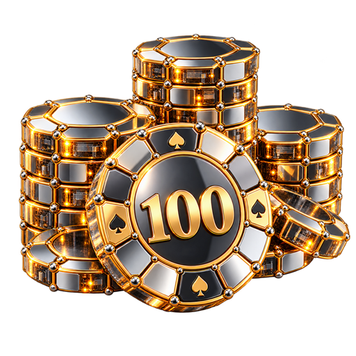
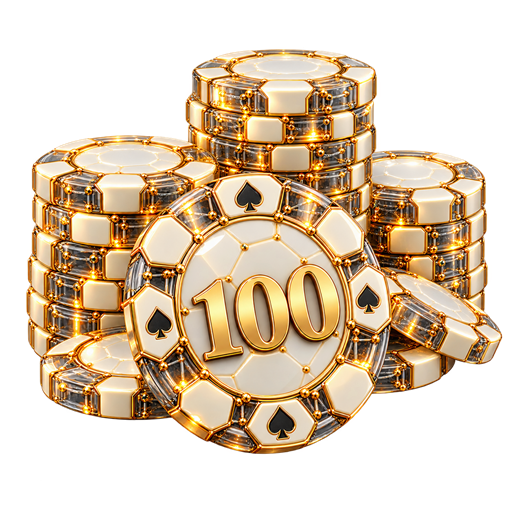
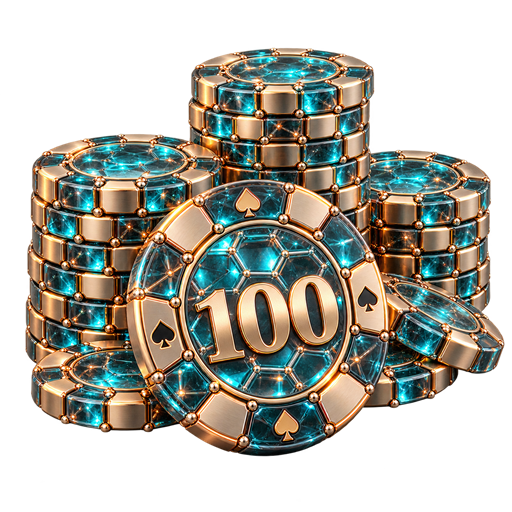
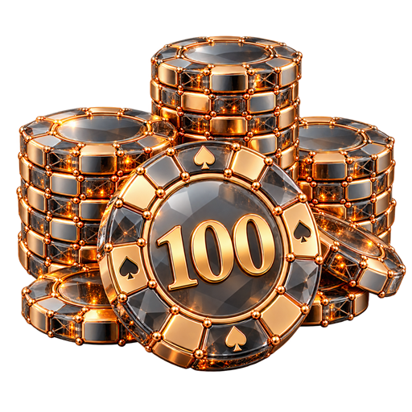
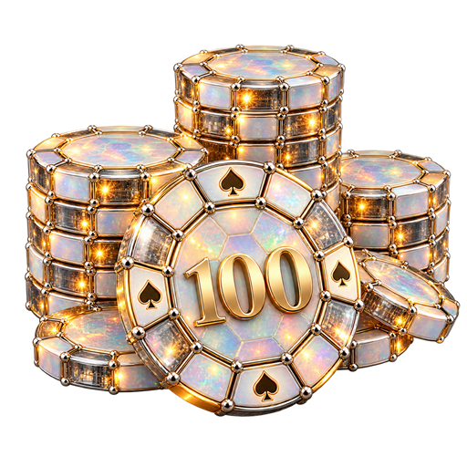

<!doctype html><html lang="ru"><meta charset="utf-8"><meta name="viewport" content="width=device-width,initial-scale=1"><title>Варианты по референсу</title><style>body{margin:24px;background:#e9ecef;color:#1e2930;font:16px system-ui}main{max-width:1200px;margin:auto}.grid{display:grid;grid-template-columns:repeat(auto-fit,minmax(300px,1fr));gap:20px}article{padding:16px;background:white;border-radius:12px}h2{font-size:17px}.pair{display:flex}.pair>div{width:50%;padding:8px}.light{background:#f8fafb}.dark{background:#101e25}img{width:100%}a{color:#076860}</style><main><h1>Варианты по референсу</h1><p>512×512 · светлая и тёмная тема</p><div class="grid"><article><h2>21. Хромовые соты и золото</h2><div class="pair"><div class="light"></div><div class="dark"></div></div><a href="21-chrome-honeycomb.png" download>Скачать PNG</a></article><article><h2>22. Белые соты и золотой каркас</h2><div class="pair"><div class="light"></div><div class="dark"></div></div><a href="22-ivory-honeycomb.png" download>Скачать PNG</a></article><article><h2>23. Стеклянные соты и титан</h2><div class="pair"><div class="light"></div><div class="dark"></div></div><a href="23-aqua-honeycomb.png" download>Скачать PNG</a></article><article><h2>24. Дымчатое стекло и медь</h2><div class="pair"><div class="light"></div><div class="dark"></div></div><a href="24-smoked-honeycomb.png" download>Скачать PNG</a></article><article><h2>25. Опаловые соты и платина</h2><div class="pair"><div class="light"></div><div class="dark"></div></div><a href="25-opal-honeycomb.png" download>Скачать PNG</a></article></div></main></html>
